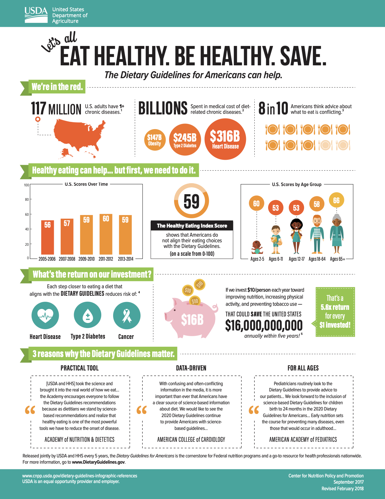

Source: https://www.statista.com/chart/16796/us-interest-in-healthy-food/ by
Katharina Buchholz, Jan 25, 2019
Pros
- Motivating and catchy title
- Simple visualizations, quite easy to interpret overall
- The visualization is showing the benifits ("What's the return on our investment" section) to push the readers towards the better (healthier) choice
- The visualization depicted by the plates (top right section) is quite good and relevant, as the visualization is discussing about food primarily
- Has historical data of last few years, so readers can see the dietary trends
- Has presented overall data, as well as broken down by age group
- The visual information is summarized by a number displayed in the center of the visualization, "The Healthy Eating Index Score"
- Even though a lot of data is presented in the visualization, it is presented quite concisely and does not overwhelm the reader, due to the appropriate and simple visualizations used
Cons
- The 3 paragraphs at the bottom, don't go along with the overall theme of the visualization. As the visualization is mostly using charts to depict information but at the bottom there is a huge blob of words
Improvements
- Remove the 3 paragraphs at the bottom